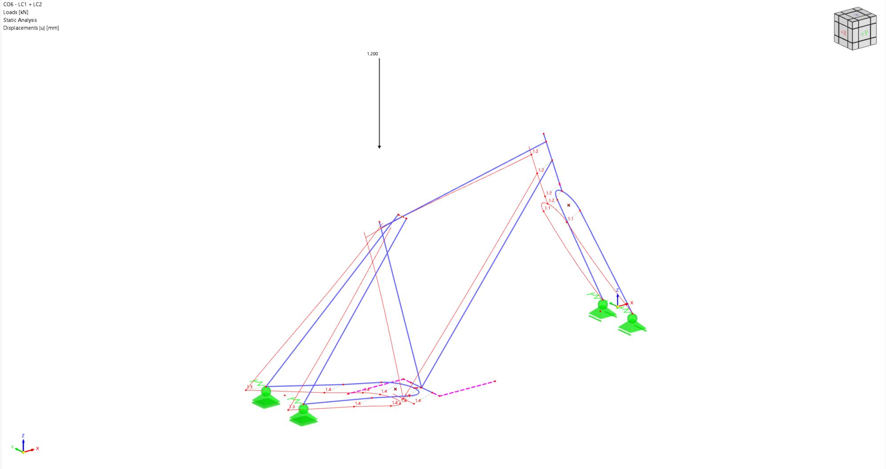

G1 Proto LEICHT – Étude de rigidité et stabilité


Nous avons procédé à une analyse par la méthode des éléments finis pour étudier le comportement du cadre en carbone du gravel.
Une analyse des contraintes et des déformations du cadre a été réalisée afin d'évaluer la répartition des efforts au sein de la structure et d'identifier les zones les plus sollicitées. Cette étude a permis de vérifier la cohérence de la conception du cadre et de confirmer que son comportement mécanique est conforme aux attentes.